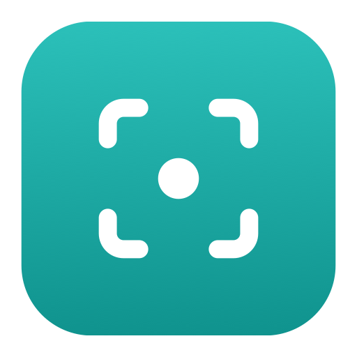

A calm, native macOS menu-bar app that captures your screen on a schedule.
Captures are saved on your Mac first, then delivered to a folder you choose — a NAS share, say. If the folder is offline, captures wait safely and upload when it returns.
Release feed (appcast)